| 日付 | 2025年8月12日（火） - 2025年8月17日（日） | ||||||||||
|---|---|---|---|---|---|---|---|---|---|---|---|
| 山域 | 北アルプス | ||||||||||
| メンバー | 単独 | ||||||||||
| 山行形態 | 5泊6日テント、車中泊 | ||||||||||
| アクセス | 車、バス、電車 | ||||||||||
| ルート (Map) |
|
5日目
テントは張りっぱなしで、5時に出発。食料・ゴミは全てザックに入れたので少し重い。
昨夜はあれほどきれいな星空だったのに、朝起きたら雲が多くてガッカリ。
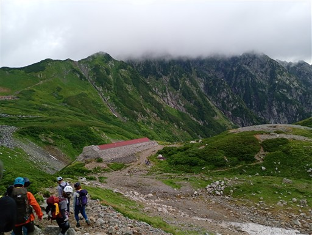
剱沢の底。雪渓が残っている。
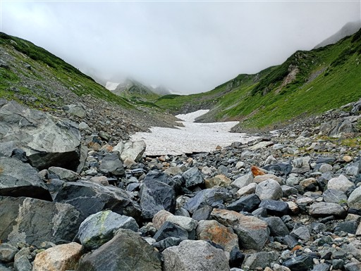
太陽が出て山の斜面が赤く光りだす。
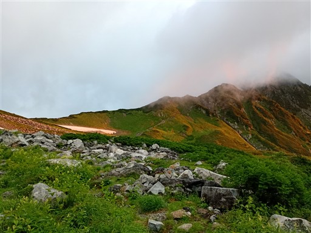
登山道を歩いていくと日影から日向に出て太陽を拝む。
こういうのも御来光と言うのだろうか？
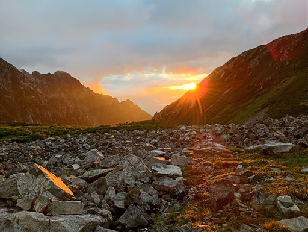
雲が多いので、太陽はすぐに隠れてしまう。
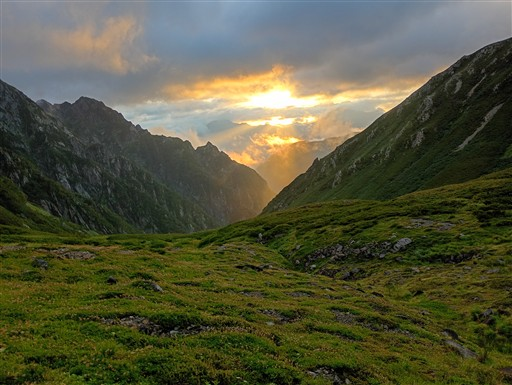
剣山荘に到着。ここが一番剱岳に近い山小屋だ。
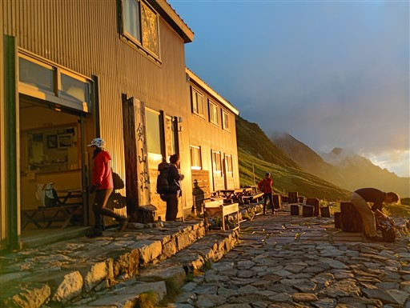
ここから本格的な剱岳への登りとなる。

1番目の鎖場。この辺りは楽勝で通過。
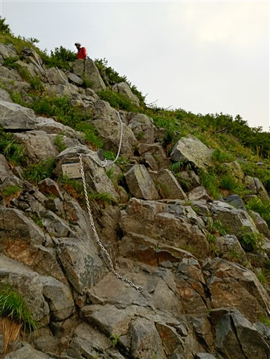
だんだん斜面が急になってくる。
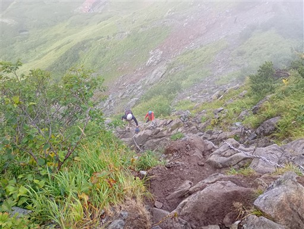
早々に登山道は雲に覆われてしまう。
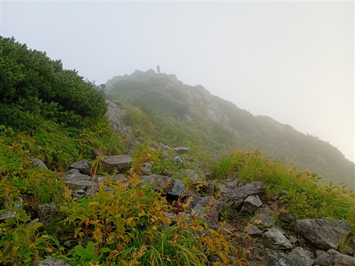
一服剱に到着。

少し下った後に再び登り。
目の前に聳えるはずの前剱は見えない。
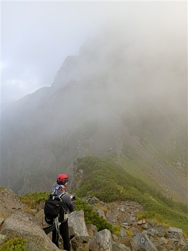
雲が多いが、これはこれで幻想的な風景。
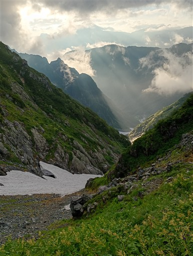
歩いてきた尾根を振り返る。
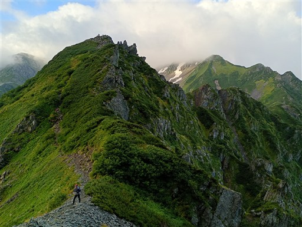
岩が露出した登山道が続く。
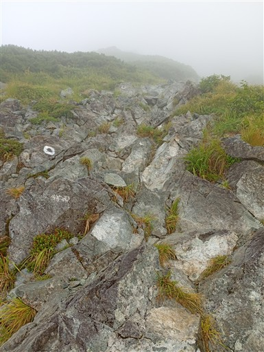
この辺りから本格的な鎖場が出てくる。
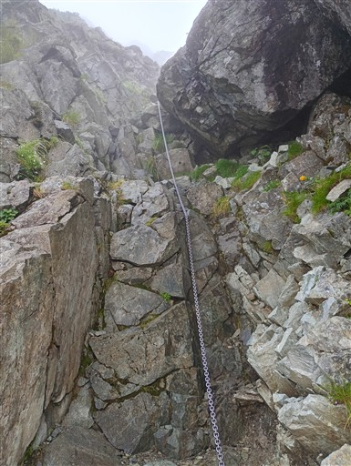
前剱に到着。
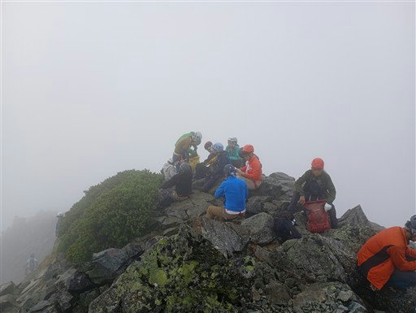
尾根は雲の中に消えており、その先にどのようなコースが広がるのか想像もつかない。
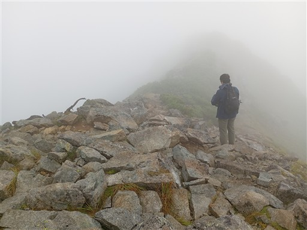
岩壁をトラバースする鎖場。
怖くて鎖にしがみついている人もいて少し渋滞。
好事家しか行かない大キレットと異なり、
剱岳に登るにはこのルートを通る必要があるため、
岩場が苦手な登山者が多いのも仕方がないだろう。
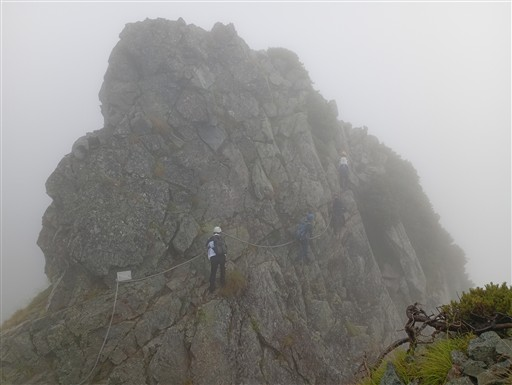
まずは小さな橋を渡る。
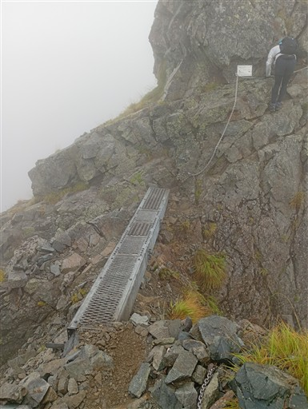
岩棚は案外広く、足を置く場所は十分にある。
ただ下が見えるため、縦に登る鎖場より怖いかもしれない。
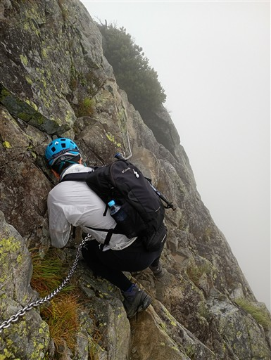
真下の景色。そこまで高度感がある訳ではないが
もちろん落ちると危険。
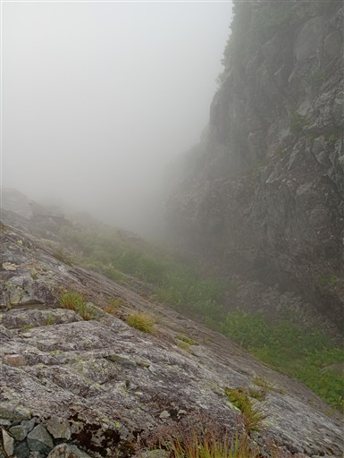
登りは右、下りは左。
場所によって登りと下りでルートが分かれる。
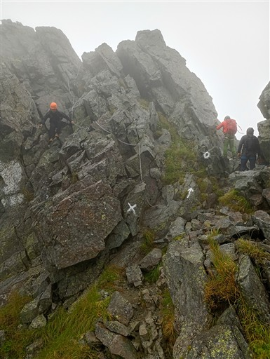
平蔵の頭の鎖場。
便利な場所にボルトが打ってあるので登りやすい。
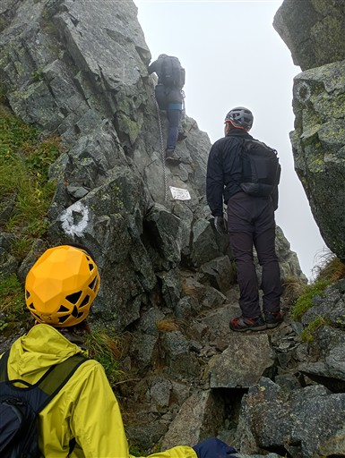
周囲は岩だらけの地形になってきた。
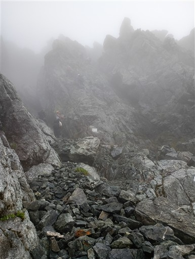
登りの核心部、カニのタテバイ。少し傾斜があるので助かる。
垂直の岩場と少し傾斜がある岩場とでは、恐怖感や登りやすさが大きく異なる。
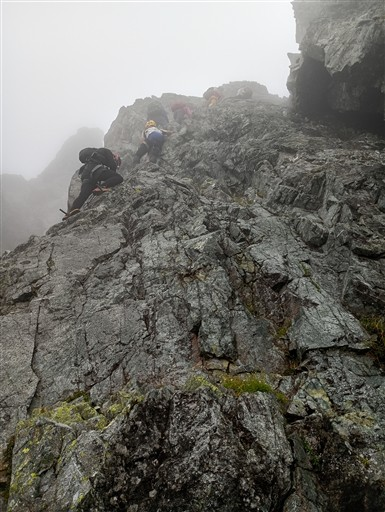
カニのタテバイを抜ける。山頂はもうすぐだ。

剱岳山頂に到着。標高2999m。
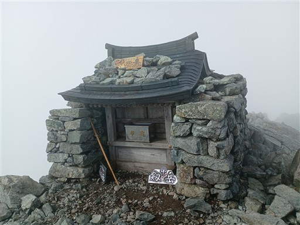
狭い山頂は大勢の登山者で賑わっている。
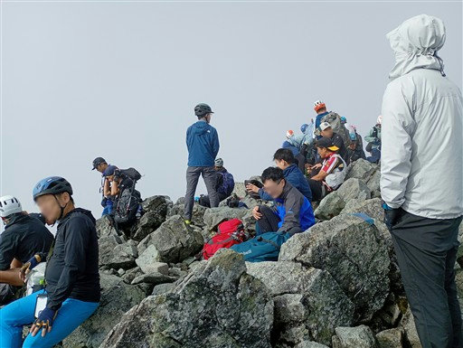
風上で煙草を吸っている人がいて、混雑で逃げ場もないのでちょっときつい。
おやつを1つ食べたら下山に取り掛かることにする。
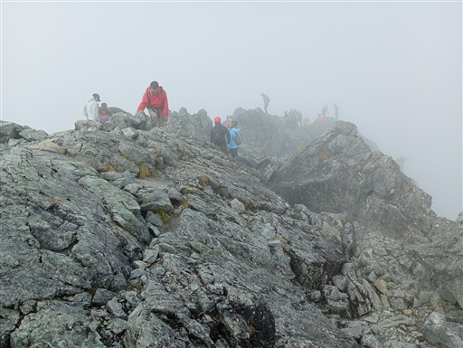
登ってくる人とのすれ違いが多い。
ただ、鎖場は分けられていることが多いので比較的スムーズだ。
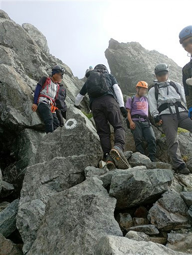
下りの核心部、カニのヨコバイ。
鎖に頼らないと入口と出口が難しい。
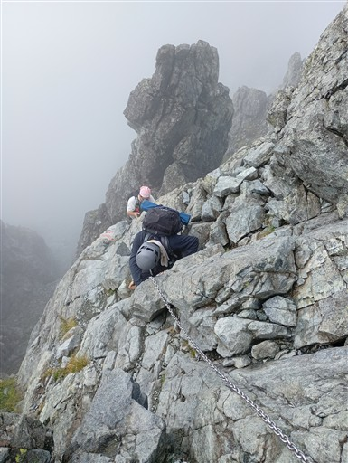
鎖場を抜けるポイント。
個人的にはこの岩場が一番難しかった。
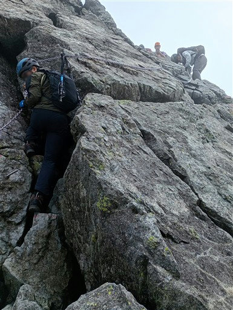
何をどうやったらこんな形で岩が積み重なるんだろう？
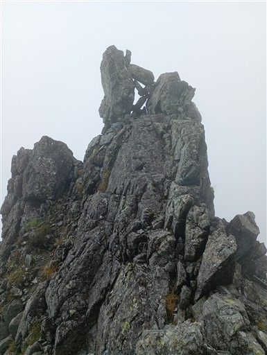
長い梯子を下る。
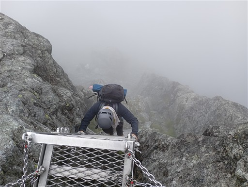
この岩場は傾斜が緩い。
しかし登りなので体力的に疲れる。

振り返ると岩尾根が見える。
天気は回復傾向なのだろうか？
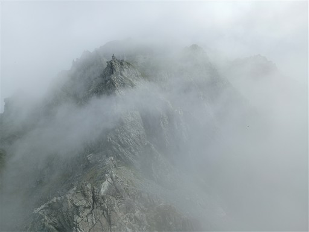
岩溝にブロック状の雪がたくさん挟まっている。
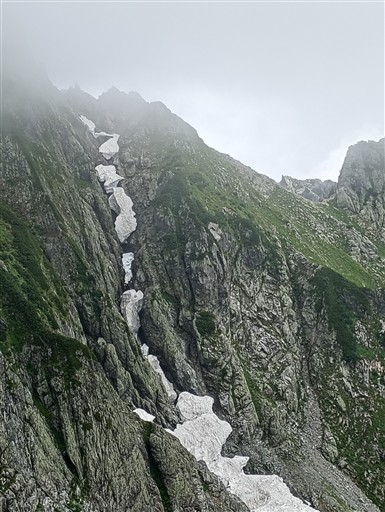
下山なのに登り。これが13番目の最後の鎖場。
もちろんその後も、登りに使った鎖場と同じ場所を通過するところはあるので、
鎖場自体はまだ続く。
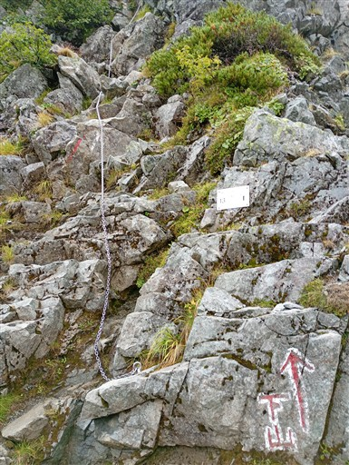
上部の登山道からの落石可能性ありとのこと。
こんな狭い場所で石が落ちてきたら結構恐怖だ。
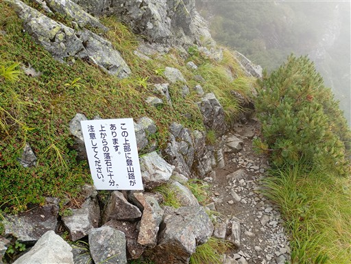
振り返ると青空が見え始めている。
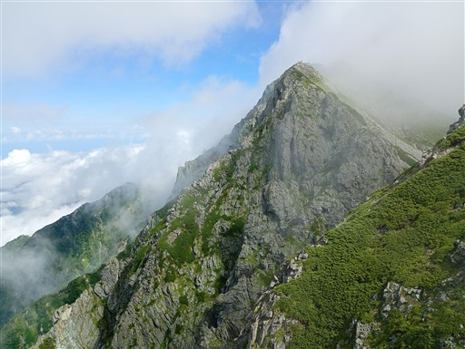
下方に続く尾根。その向こうに剱沢小屋が見えている。
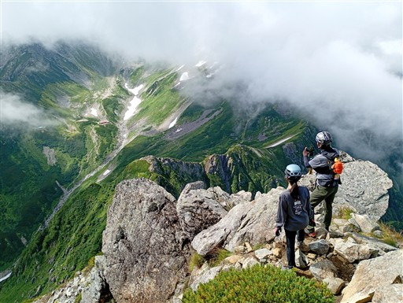
下ってきた斜面を見上げる。もう頭上は青空だ。
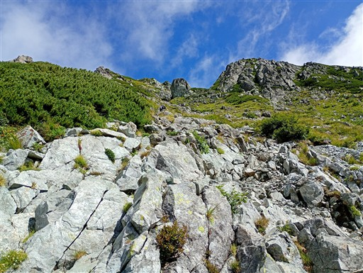
一服剱に到着。展望が広がるので、ここで昼食休憩をとる。
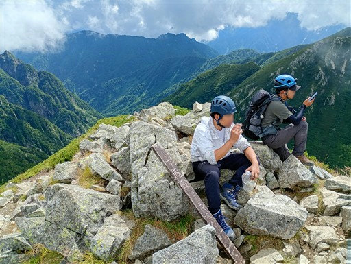
先ほどまで歩いていた前剱が聳える。
よくこんな急傾斜の道を下ってこれたものだ。
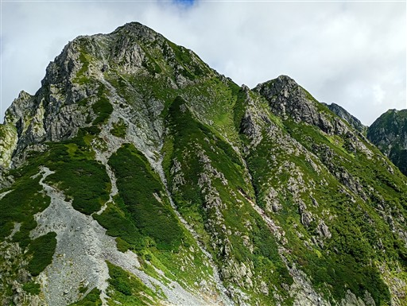
広大な剱沢の全貌が見渡せる。本当に雄大な景色だ。
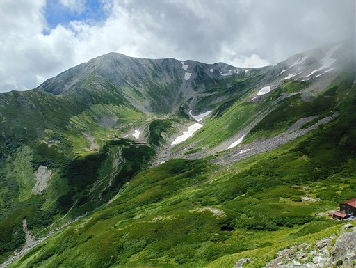
剣山荘に戻ってくる。ひとまず危険エリアはクリア。
剱岳の岩場は程よい難易度で楽しいコースだった。
ここ最近、西上州の岩場で苦戦して少し自信を失っていたが、
それほど岩場登攀能力が落ちている訳ではなさそうで安心した。
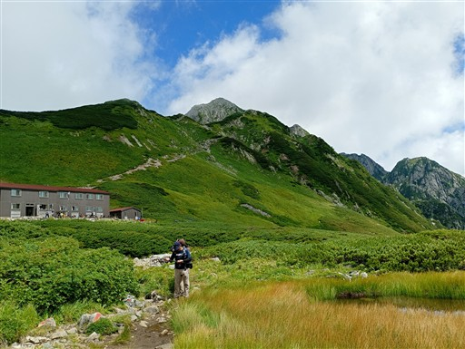
この辺りには小さな花がいくつか咲いている。
こちらはツガザクラ。
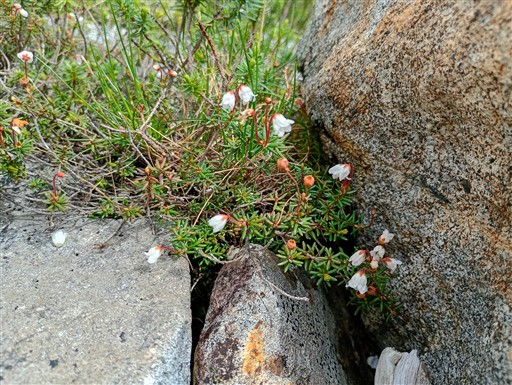
アオノツガザクラ。
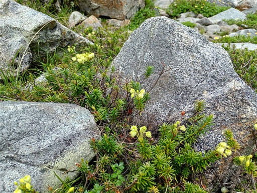
剱沢キャンプ場に戻ってくる。張っておいたテントを撤収。
撤収時にテントを持ち上げた瞬間、テントのポールが折れる。
もう17年前のテントで、ポールが劣化していたのだろう。
以前も2回折れたことがあり、予備のポールの部品を持ってきているのでここで修理。
時間に余裕がある日の事故で助かった。

そうこうしているうちに、剱岳が完全な姿を目の前に現す。
下山したら晴れるというのは登山あるあるだ。
もちろん何も見えないままよりずっと良い。
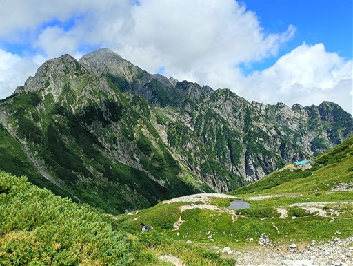
剱沢キャンプ場を後にし、雷鳥沢キャンプ場に向かう。
別山方面からこの地に来たが、分岐点で室堂方面に向かう。
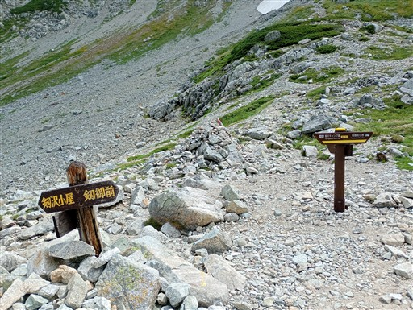
右手に見える剱御前小屋に向かって登っていく。
足取りが重く、ゆっくり登っていく。
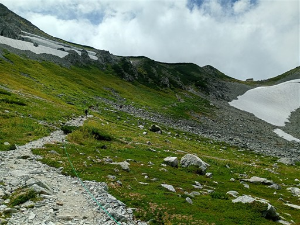
鮮やかなタテヤマリンドウが咲いている。
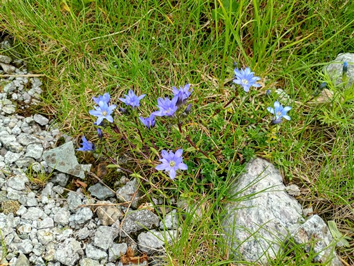
剱御前小屋に到着。
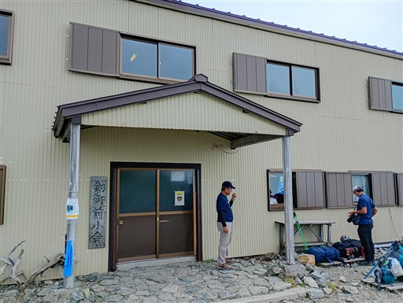
剱岳の展望はここまでだ。
さて、室堂の展望はどうだろう、と思い覗いてみると、結構雲の量が多い。
しかし、室堂に向かって下っていくと、展望が広がってくる。
本来なら昨日からずっと見えるはずだった室堂が、ようやく見渡せる。
室堂は平坦なイメージを持っていたが、案外起伏がある。
一番底にあるのが雷鳥沢キャンプ場だ。
正面は浄土山、左の雄山は雲の中。
その間にある峠が昨日通過した一ノ越だ。
雷鳥沢キャンプ場がだいぶ近くなってきた。
木橋で雷鳥沢を渡る。
広大な雷鳥沢キャンプ場に到着。
剱沢キャンプ場も広かったが、こちらもすごく広い。
立山は残念ながら雲の中だが、景色は最高だ。
管理棟で受付を済ます。
売店はなく、買い物は近くの小屋まで歩く必要がある。
テントを張ったら、温泉、買い物、観光に向かう。
標高差150mほど登る必要があり、思った以上に重労働だ。
地獄谷を見下ろす。
18年前の訪問時は地獄谷を歩く遊歩道があったのだが、閉鎖されて久しい。
まだまだ階段を登る。
この辺りはもう観光客の世界。
ほとんど歩かずにこの景色を堪能できる。
SO2検知器。毒ガスを吸わないように配慮がなされている。
硫化水素ではなく、二酸化硫黄の検知なのはなぜだろう？
みくりが池温泉に到着。
雲上の温泉。日本最高所、標高2430mの温泉だ。
温泉後はソフトクリームを食べる。500円で山値段というより下界の値段に近い。
ミクリガ池。室堂を代表する観光スポットだ。
室堂バスターミナルに到着。
右の建物はホテル立山。外壁は薄汚れている。
ホテル立山は星野リゾートへの売却が決まった。
バスターミナルの売店で明日の行動食を購入。
本日帰る人が列をなしている。
バスターミナル前にある立山玉殿の湧水。
ペットボトルを持ってきているので、汲んでいく。
あとは、室堂周辺をゆっくり散策する。
何やら左手首がやたら痛くなってくる。
剱岳で痛めたか？それともシャンプーのしすぎ？
ミドリガ池。ミクリガ池の隣にある一回り小さい池だ。
血の池。酸化鉄の影響で赤く染まっている。
キャンプ場に戻ってくる。夕方遅くになり、ついに立山がその姿を現す。
19時過ぎ。周囲はすっかり暗くなる。
夜は星空がきれいだったが、起きた時間が悪かったのか月が出ていて
剱沢キャンプ場ほどの星空は見られなかった。